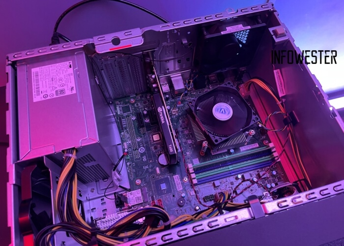

Manutenção de Computadores e Notebooks

Oferecemos serviços de manutenção preventiva e corretiva para computadores e notebooks de todas as marcas e modelos. Nossa equipe de técnicos qualificados está pronta para solucionar qualquer problema, desde a remoção de vírus até a troca de componentes danificados.
Garantimos um serviço rápido, eficiente e com garantia de qualidade.
Serviços Oferecidos:
- Remoção de vírus e malware
- Formatação e instalação de sistemas operacionais
- Troca de componentes danificados (HD, memória, placa-mãe)
- Limpeza interna e externa
- Otimização de desempenho